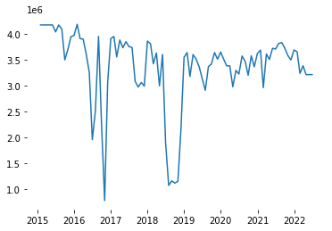
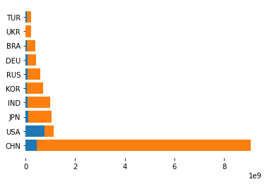
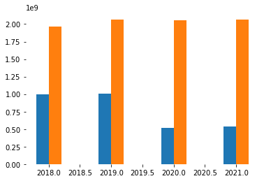
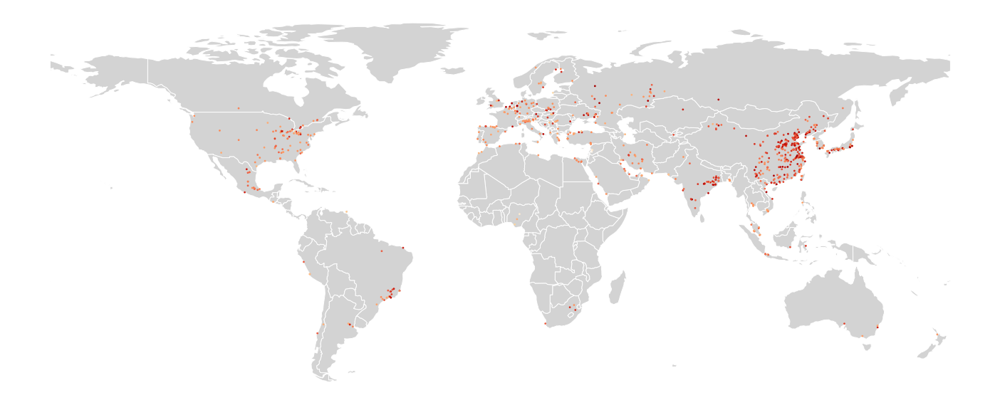
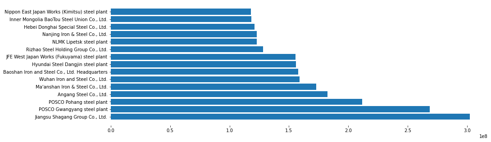

Week 6: Merging and comparing geospatial data
Contents
Week 6: Merging and comparing geospatial data#
The objective of this lecture is to continue to put in the reptitions of downloading, visualizing, and analyzing geospatial data. We are working with two different datasets on asset-level emissions. This lecture is purely the notes, meant exclusively for copy and paste in class, as needed.
import geopandas
import pandas
import warnings
warnings.filterwarnings("ignore")
url = "https://raw.githubusercontent.com/danhammer/envirods/main/data/steel.geojson"
steel_gdf = geopandas.read_file(url)
steel_gdf.sort_values("CO2_emissions", ascending=False)
| start_date | end_date | asset_name | iso3_country | CO2_emissions | geometry | |
|---|---|---|---|---|---|---|
| 10338 | 2016-01-01 | 2016-01-31 | Jiangsu Shagang Group Co., Ltd. | CHN | 4184866.0 | POINT (120.63899 31.98315) |
| 1878 | 2015-03-01 | 2015-03-31 | Jiangsu Shagang Group Co., Ltd. | CHN | 4172448.0 | POINT (120.63899 31.98315) |
| 2724 | 2015-04-01 | 2015-04-30 | Jiangsu Shagang Group Co., Ltd. | CHN | 4172448.0 | POINT (120.63899 31.98315) |
| 5262 | 2015-07-01 | 2015-07-31 | Jiangsu Shagang Group Co., Ltd. | CHN | 4172448.0 | POINT (120.63899 31.98315) |
| 186 | 2015-01-01 | 2015-01-31 | Jiangsu Shagang Group Co., Ltd. | CHN | 4172448.0 | POINT (120.63899 31.98315) |
| ... | ... | ... | ... | ... | ... | ... |
| 14538 | 2016-06-01 | 2016-06-30 | Henan Fengbao Special Steel Co., Ltd. | CHN | 0.0 | POINT (113.87216 36.13167) |
| 14531 | 2016-06-01 | 2016-06-30 | Jianlong Beiman Special Steel Co., Ltd. | CHN | 0.0 | POINT (123.61651 47.19129) |
| 14520 | 2016-06-01 | 2016-06-30 | Tangshan Wenfeng Special Steel Co., Ltd. | CHN | 0.0 | POINT (118.43226 39.14654) |
| 56911 | 2020-08-01 | 2020-08-31 | Anshan Baode Iron & Steel Co., Ltd. | CHN | 0.0 | POINT (122.94550 41.17361) |
| 76139 | 2022-06-01 | 2022-06-30 | ArcelorMittal Saldanha Steel Works | ZAF | 0.0 | POINT (18.02323 -32.97952) |
76140 rows × 6 columns
import matplotlib.pyplot as plt
from datetime import datetime
plant = steel_gdf[steel_gdf["asset_name"] == "Jiangsu Shagang Group Co., Ltd."]
plt.plot(
plant["end_date"],
plant["CO2_emissions"],
)
[<matplotlib.lines.Line2D at 0x125832a90>]
from dateutil.parser import parse
from datetime import datetime
plant['date'] = pandas.to_datetime(plant['end_date'])
plt.plot(
plant["date"],
plant["CO2_emissions"],
)
plt.box(on=None)

plant["year"] = plant["date"].dt.year
print(plant["date"].dt)
<pandas.core.indexes.accessors.DatetimeProperties object at 0x1274e5250>
steel_gdf["date"] = pandas.to_datetime(steel_gdf['end_date'])
steel_gdf["year"] = steel_gdf["date"].dt.year
steel_gdf
| start_date | end_date | asset_name | iso3_country | CO2_emissions | geometry | date | year | |
|---|---|---|---|---|---|---|---|---|
| 0 | 2015-01-01 | 2015-01-31 | GHC Emirates Steel Industries Abu Dhabi plant | ARE | 62492.0 | POINT (54.46799 24.32203) | 2015-01-31 | 2015 |
| 1 | 2015-01-01 | 2015-01-31 | Kurum International Elbasan steel plant | ALB | 21088.0 | POINT (20.02612 41.09461) | 2015-01-31 | 2015 |
| 2 | 2015-01-01 | 2015-01-31 | ArcelorMittal Acindar Villa Constitución steel... | ARG | 28164.0 | POINT (-60.30042 -33.24994) | 2015-01-31 | 2015 |
| 3 | 2015-01-01 | 2015-01-31 | TenarisSiderca Campana steel plant | ARG | 21537.0 | POINT (-58.97739 -34.15255) | 2015-01-31 | 2015 |
| 4 | 2015-01-01 | 2015-01-31 | Ternium Siderar San Nicolás steel plant | ARG | 317156.0 | POINT (-60.13870 -33.37365) | 2015-01-31 | 2015 |
| ... | ... | ... | ... | ... | ... | ... | ... | ... |
| 76135 | 2022-06-01 | 2022-06-30 | Thai Nguyen Iron & Steel plant | VNM | 32004.0 | POINT (105.87280 21.55748) | 2022-06-30 | 2022 |
| 76136 | 2022-06-01 | 2022-06-30 | ArcelorMittal Newcastle Steel Works | ZAF | 102942.0 | POINT (30.01406 -27.70538) | 2022-06-30 | 2022 |
| 76137 | 2022-06-01 | 2022-06-30 | ArcelorMittal Vanderbijlpark Steel Works | ZAF | 83334.0 | POINT (27.82231 -26.65737) | 2022-06-30 | 2022 |
| 76138 | 2022-06-01 | 2022-06-30 | Acerinox Columbus Stainless steel plant | ZAF | 13599.0 | POINT (29.49797 -25.79631) | 2022-06-30 | 2022 |
| 76139 | 2022-06-01 | 2022-06-30 | ArcelorMittal Saldanha Steel Works | ZAF | 0.0 | POINT (18.02323 -32.97952) | 2022-06-30 | 2022 |
76140 rows × 8 columns
steel_collapsed = steel_gdf.groupby(["asset_name"])["CO2_emissions"].sum().reset_index()
locations = steel_gdf[["asset_name", "geometry"]].drop_duplicates(ignore_index=True)
df = steel_collapsed.merge(locations, on="asset_name")
gdf = geopandas.GeoDataFrame(df, geometry="geometry")
import matplotlib.pyplot as plt
world = geopandas.read_file(geopandas.datasets.get_path('naturalearth_lowres'))
world = world[world["continent"] != "Antarctica"]
fig, ax = plt.subplots(figsize=(20, 10))
world.plot(
ax=ax,
edgecolor="grey",
color="lightgrey"
)
gdf.plot(
ax=ax,
markersize=3,
column="CO2_emissions",
cmap="magma"
)
plt.box(on=None)
plt.axis('off')
(-198.0, 198.00000000000006, -62.574678000000006, 90.60797800000003)
import numpy
gdf["log_CO2_emissions"] = numpy.log(gdf["CO2_emissions"])
gdf.sort_values("CO2_emissions")
print(gdf[["asset_name", "CO2_emissions"]].sort_values("CO2_emissions").head())
asset_name CO2_emissions
24 Al Tuwairqi Steel Karachi plant 0.0
64 ArcelorMittal Florange steel plant 0.0
474 Max Aicher Slovakia Steel Mills Strazske 0.0
366 JSW Bengal Steel Salboni plant 0.0
535 Nursan Steel Payas plant 0.0
gdf = gdf[gdf["CO2_emissions"] > 0]
gdf["log_CO2_emissions"] = numpy.log(gdf["CO2_emissions"])
fig, ax = plt.subplots(figsize=(20, 10))
world.plot(
ax=ax,
edgecolor="grey",
color="lightgrey"
)
gdf.plot(
ax=ax,
markersize=3,
column="log_CO2_emissions",
cmap="magma",
legend=True
)
plt.box(on=None)
plt.axis('off')
(-198.0, 198.00000000000006, -62.574678000000006, 90.60797800000003)
aviation = pandas.read_csv("https://raw.githubusercontent.com/danhammer/envirods/main/data/aviation.csv")
aviation['geometry'] = geopandas.GeoSeries.from_wkt(aviation['geometry'])
aviation_gdf = geopandas.GeoDataFrame(
aviation,
geometry="geometry"
)
x = aviation_gdf.groupby(["iso3_country"]).sum()["CO2_emissions_tonnes"].reset_index()
x.columns = ["iso", "aviation_emissions"]
y = steel_gdf.groupby(["iso3_country"]).sum()["CO2_emissions"].reset_index()
y.columns = ["iso", "steel_emissions"]
df = x.merge(y, how="inner", on="iso")
df["total"] = df["aviation_emissions"] + df["steel_emissions"]
graphing_df = df.sort_values("total", ascending=False)[0:10]
plt.barh(
graphing_df["iso"],
graphing_df["total"]
)
<BarContainer object of 10 artists>
plt.barh(graphing_df["iso"], graphing_df["aviation_emissions"])
<BarContainer object of 10 artists>
plt.barh(graphing_df["iso"], graphing_df["aviation_emissions"])
plt.barh(graphing_df["iso"], graphing_df["steel_emissions"], left=graphing_df["aviation_emissions"])
plt.box(on=None)
plt.savefig("/Users/danhammer/Desktop/steel.png", transparent=True)

plt.barh(graphing_df["iso"], graphing_df["steel_emissions"])
plt.barh(graphing_df["iso"], graphing_df["aviation_emissions"], left=graphing_df["steel_emissions"])
<BarContainer object of 10 artists>
aviation_gdf["date"] = pandas.to_datetime(aviation_gdf['end_date'])
aviation_gdf["year"] = aviation_gdf["date"].dt.year
x = aviation_gdf.groupby(["year"]).sum()["CO2_emissions_tonnes"].reset_index()
x.columns = ["year", "aviation_emissions"]
y = steel_gdf.groupby(["year"]).sum()["CO2_emissions"].reset_index()
y.columns = ["year", "steel_emissions"]
df = x.merge(y, how="inner", on="year")
df["total"] = df["aviation_emissions"] + df["steel_emissions"]
df = df[df.year < 2022] # different months
# plot bars
plt.bar(df["year"] - 0.1, df['aviation_emissions'], width = 0.2)
plt.bar(df["year"] + 0.1, df['steel_emissions'], width = 0.2)
plt.box(on=None)
plt.savefig("/Users/danhammer/Desktop/annual.png", transparent=True)

df = steel_collapsed.merge(locations, on="asset_name")
gdf = geopandas.GeoDataFrame(df, geometry="geometry")
gdf = gdf[gdf["CO2_emissions"] > 0]
gdf["log_CO2_emissions"] = numpy.log(gdf["CO2_emissions"])
fig, ax = plt.subplots(figsize=(20, 10), frameon=False)
world.plot(
ax=ax,
edgecolor="white",
color="lightgrey"
)
gdf.plot(
ax=ax,
markersize=3,
column="log_CO2_emissions",
cmap="OrRd"
)
plt.tight_layout()
plt.box(on=None)
plt.axis('off')
plt.savefig("/Users/danhammer/Desktop/steel.png", transparent=True)

x = aviation_gdf.groupby("asset_name").sum()["CO2_emissions_tonnes"].reset_index()
x = x.sort_values("CO2_emissions_tonnes", ascending=False)
fig, ax = plt.subplots(figsize=(15, 5), frameon=False)
plt.barh(
x["asset_name"],
x["CO2_emissions_tonnes"]
)
plt.box(on=None)
plt.savefig("/Users/danhammer/Desktop/airports.png", transparent=True)
---------------------------------------------------------------------------
KeyboardInterrupt Traceback (most recent call last)
<ipython-input-23-0ea731888473> in <module>
11
12 plt.box(on=None)
---> 13 plt.savefig("/Users/danhammer/Desktop/airports.png", transparent=True)
~/streamlitenv/lib/python3.7/site-packages/matplotlib/pyplot.py in savefig(*args, **kwargs)
857 def savefig(*args, **kwargs):
858 fig = gcf()
--> 859 res = fig.savefig(*args, **kwargs)
860 fig.canvas.draw_idle() # need this if 'transparent=True' to reset colors
861 return res
~/streamlitenv/lib/python3.7/site-packages/matplotlib/figure.py in savefig(self, fname, transparent, **kwargs)
2309 patch.set_edgecolor('none')
2310
-> 2311 self.canvas.print_figure(fname, **kwargs)
2312
2313 if transparent:
~/streamlitenv/lib/python3.7/site-packages/matplotlib/backend_bases.py in print_figure(self, filename, dpi, facecolor, edgecolor, orientation, format, bbox_inches, pad_inches, bbox_extra_artists, backend, **kwargs)
2215 orientation=orientation,
2216 bbox_inches_restore=_bbox_inches_restore,
-> 2217 **kwargs)
2218 finally:
2219 if bbox_inches and restore_bbox:
~/streamlitenv/lib/python3.7/site-packages/matplotlib/backend_bases.py in wrapper(*args, **kwargs)
1637 kwargs.pop(arg)
1638
-> 1639 return func(*args, **kwargs)
1640
1641 return wrapper
~/streamlitenv/lib/python3.7/site-packages/matplotlib/backends/backend_agg.py in print_png(self, filename_or_obj, metadata, pil_kwargs, *args)
507 *metadata*, including the default 'Software' key.
508 """
--> 509 FigureCanvasAgg.draw(self)
510 mpl.image.imsave(
511 filename_or_obj, self.buffer_rgba(), format="png", origin="upper",
~/streamlitenv/lib/python3.7/site-packages/matplotlib/backends/backend_agg.py in draw(self)
405 (self.toolbar._wait_cursor_for_draw_cm() if self.toolbar
406 else nullcontext()):
--> 407 self.figure.draw(self.renderer)
408 # A GUI class may be need to update a window using this draw, so
409 # don't forget to call the superclass.
~/streamlitenv/lib/python3.7/site-packages/matplotlib/artist.py in draw_wrapper(artist, renderer, *args, **kwargs)
39 renderer.start_filter()
40
---> 41 return draw(artist, renderer, *args, **kwargs)
42 finally:
43 if artist.get_agg_filter() is not None:
~/streamlitenv/lib/python3.7/site-packages/matplotlib/figure.py in draw(self, renderer)
1862 self.patch.draw(renderer)
1863 mimage._draw_list_compositing_images(
-> 1864 renderer, self, artists, self.suppressComposite)
1865
1866 renderer.close_group('figure')
~/streamlitenv/lib/python3.7/site-packages/matplotlib/image.py in _draw_list_compositing_images(renderer, parent, artists, suppress_composite)
129 if not_composite or not has_images:
130 for a in artists:
--> 131 a.draw(renderer)
132 else:
133 # Composite any adjacent images together
~/streamlitenv/lib/python3.7/site-packages/matplotlib/artist.py in draw_wrapper(artist, renderer, *args, **kwargs)
39 renderer.start_filter()
40
---> 41 return draw(artist, renderer, *args, **kwargs)
42 finally:
43 if artist.get_agg_filter() is not None:
~/streamlitenv/lib/python3.7/site-packages/matplotlib/cbook/deprecation.py in wrapper(*inner_args, **inner_kwargs)
409 else deprecation_addendum,
410 **kwargs)
--> 411 return func(*inner_args, **inner_kwargs)
412
413 return wrapper
~/streamlitenv/lib/python3.7/site-packages/matplotlib/axes/_base.py in draw(self, renderer, inframe)
2745 renderer.stop_rasterizing()
2746
-> 2747 mimage._draw_list_compositing_images(renderer, self, artists)
2748
2749 renderer.close_group('axes')
~/streamlitenv/lib/python3.7/site-packages/matplotlib/image.py in _draw_list_compositing_images(renderer, parent, artists, suppress_composite)
129 if not_composite or not has_images:
130 for a in artists:
--> 131 a.draw(renderer)
132 else:
133 # Composite any adjacent images together
~/streamlitenv/lib/python3.7/site-packages/matplotlib/artist.py in draw_wrapper(artist, renderer, *args, **kwargs)
39 renderer.start_filter()
40
---> 41 return draw(artist, renderer, *args, **kwargs)
42 finally:
43 if artist.get_agg_filter() is not None:
~/streamlitenv/lib/python3.7/site-packages/matplotlib/axis.py in draw(self, renderer, *args, **kwargs)
1174 # the actual bbox
1175
-> 1176 self._update_label_position(renderer)
1177
1178 self.label.draw(renderer)
~/streamlitenv/lib/python3.7/site-packages/matplotlib/axis.py in _update_label_position(self, renderer)
2351 # get bounding boxes for this axis and any siblings
2352 # that have been set by `fig.align_ylabels()`
-> 2353 bboxes, bboxes2 = self._get_tick_boxes_siblings(renderer=renderer)
2354
2355 x, y = self.label.get_position()
~/streamlitenv/lib/python3.7/site-packages/matplotlib/axis.py in _get_tick_boxes_siblings(self, renderer)
2336 for axx in grp.get_siblings(self.axes):
2337 ticks_to_draw = axx.yaxis._update_ticks()
-> 2338 tlb, tlb2 = axx.yaxis._get_tick_bboxes(ticks_to_draw, renderer)
2339 bboxes.extend(tlb)
2340 bboxes2.extend(tlb2)
~/streamlitenv/lib/python3.7/site-packages/matplotlib/axis.py in _get_tick_bboxes(self, ticks, renderer)
1090 """Return lists of bboxes for ticks' label1's and label2's."""
1091 return ([tick.label1.get_window_extent(renderer)
-> 1092 for tick in ticks if tick.label1.get_visible()],
1093 [tick.label2.get_window_extent(renderer)
1094 for tick in ticks if tick.label2.get_visible()])
~/streamlitenv/lib/python3.7/site-packages/matplotlib/axis.py in <listcomp>(.0)
1090 """Return lists of bboxes for ticks' label1's and label2's."""
1091 return ([tick.label1.get_window_extent(renderer)
-> 1092 for tick in ticks if tick.label1.get_visible()],
1093 [tick.label2.get_window_extent(renderer)
1094 for tick in ticks if tick.label2.get_visible()])
~/streamlitenv/lib/python3.7/site-packages/matplotlib/text.py in get_window_extent(self, renderer, dpi)
900
901 with cbook._setattr_cm(self.figure, dpi=dpi):
--> 902 bbox, info, descent = self._get_layout(self._renderer)
903 x, y = self.get_unitless_position()
904 x, y = self.get_transform().transform((x, y))
~/streamlitenv/lib/python3.7/site-packages/matplotlib/text.py in _get_layout(self, renderer)
294 if clean_line:
295 w, h, d = renderer.get_text_width_height_descent(
--> 296 clean_line, self._fontproperties, ismath=ismath)
297 else:
298 w = h = d = 0
~/streamlitenv/lib/python3.7/site-packages/matplotlib/backends/backend_agg.py in get_text_width_height_descent(self, s, prop, ismath)
235
236 flags = get_hinting_flag()
--> 237 font = self._get_agg_font(prop)
238 font.set_text(s, 0.0, flags=flags)
239 w, h = font.get_width_height() # width and height of unrotated string
~/streamlitenv/lib/python3.7/site-packages/matplotlib/backends/backend_agg.py in _get_agg_font(self, prop)
271 """
272 fname = findfont(prop)
--> 273 font = get_font(fname)
274
275 font.clear()
~/streamlitenv/lib/python3.7/site-packages/matplotlib/font_manager.py in get_font(filename, hinting_factor)
1412 # Resolving the path avoids embedding the font twice in pdf/ps output if a
1413 # single font is selected using two different relative paths.
-> 1414 filename = os.path.realpath(filename)
1415 if hinting_factor is None:
1416 hinting_factor = rcParams['text.hinting_factor']
/Library/Frameworks/Python.framework/Versions/3.7/lib/python3.7/posixpath.py in realpath(filename)
393 symbolic links encountered in the path."""
394 filename = os.fspath(filename)
--> 395 path, ok = _joinrealpath(filename[:0], filename, {})
396 return abspath(path)
397
/Library/Frameworks/Python.framework/Versions/3.7/lib/python3.7/posixpath.py in _joinrealpath(path, rest, seen)
426 path = pardir
427 continue
--> 428 newpath = join(path, name)
429 if not islink(newpath):
430 path = newpath
/Library/Frameworks/Python.framework/Versions/3.7/lib/python3.7/posixpath.py in join(a, *p)
73 # Insert a '/' unless the first part is empty or already ends in '/'.
74
---> 75 def join(a, *p):
76 """Join two or more pathname components, inserting '/' as needed.
77 If any component is an absolute path, all previous path components
KeyboardInterrupt:
x = steel_gdf.groupby("asset_name").sum()["CO2_emissions"].reset_index()
x = x.sort_values("CO2_emissions", ascending=False)[0:15]
fig, ax = plt.subplots(figsize=(15, 5), frameon=False)
plt.barh(
x["asset_name"],
x["CO2_emissions"]
)
plt.box(on=None)
plt.savefig("/Users/danhammer/Desktop/steel_rank.png", transparent=True)

Comparisons#
url = "https://raw.githubusercontent.com/danhammer/envirods/main/data/steel.geojson"
steel_gdf = geopandas.read_file(url)